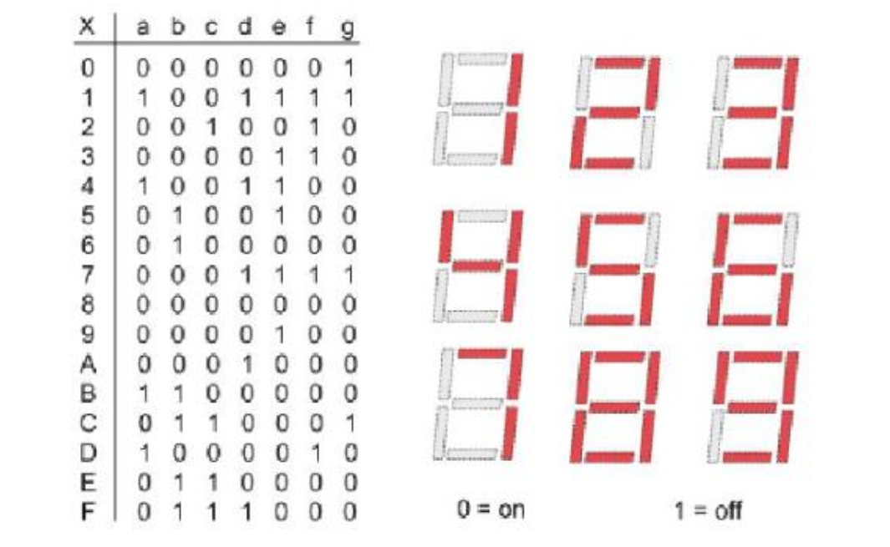
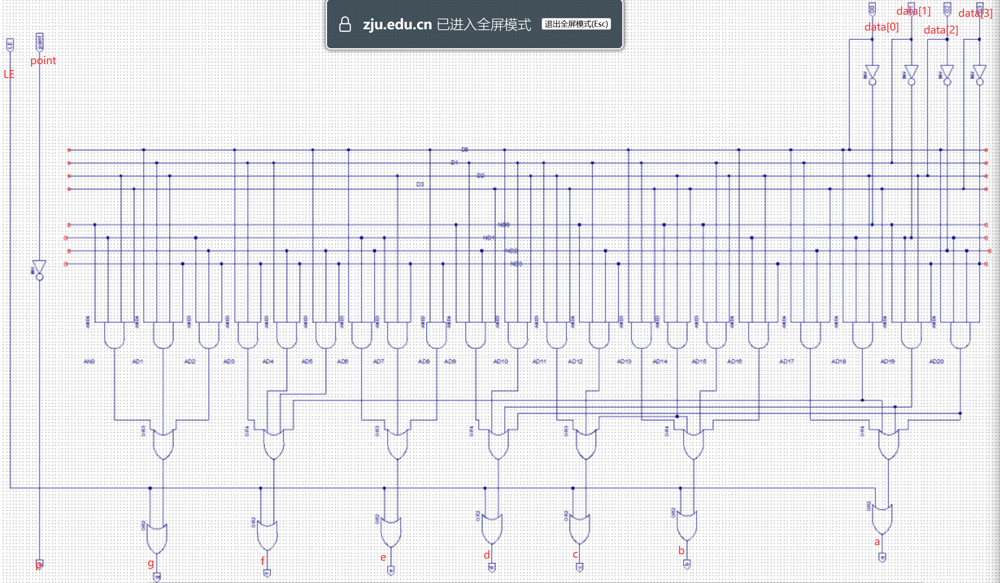

实验 1-2：七段数码管译码器设计与应用 ¶
实验目的 ¶
- 掌握使用 verilog 语言进行电路设计的方法
- 掌握七段数码管显示译码器（MC14495）的内部电路结构及其设计
- 实现 Nexys A7 开发板七段数码管十六进制数显示
实验环境 ¶
- EDA 工具：Ngspice，LogSim Evolution
- 操作系统：Windows 10+ 22H2，Ubuntu 22.04+
- VHDL：Verilog
背景知识 ¶
变量译码器（decoder）¶
译码器（decoder）是一类多输入多输出组合逻辑电路器件，其可以分为：变量译码和显示译码两类。
- 变量译码器一般是一种较少输入变为较多输出的器件，常见的有 n 线 -2 n 线译码和 8421BCD 码译码两类
- 显示译码器用来将二进制数转换成对应的七段码，一般其可分为驱动 LED 和驱动 LCD 两类

广义的译码器是指将二进制编码输入转换为任意的编码输出，且这个转换关系可以不满足单射。我们反思一下，其实一个逻辑表达式或者说一张真值表，就是一个输入到输出的编码对应关系，输入天然满足二进制编码，如果我们将输出定义为一种新的编码，那么任何有限长度的输入输出映射对应的电路都可以称之为编码器。
复合多路选择器 ¶
多路选择器可以根据 selector 从多个单 bit 输入中选择单 bit 的输出，那如果我们需要从多组输入中根据 selector 选出单组输出呢？可以使用复合多路选择器。
多个一位多路选择器组合
复合多路选择器在硬件实现上是用多个一位多路选择器组合而成
{}是[i]的反操作，{ W0, W1, W2, ..., Wn }将线路数组 W0, W1, ..., Wn 组拼接成一个增广的线路数组：
LEN({ W0, W1, W2, ..., Wn }) = Sum(LEN(W0), LEN(W1), ..., LEN(Wn)){ W0, W1, W2, ..., Wn }的线路从高到低的输入和 W0, W1, ..., Wn 内部从高到低的输出保持一致
与或形式
也可以用最朴素的逻辑门的形式得到符合多路选择器电路，不过这个电路未免过于复杂，我们可以用一些 Verilog 语法进行简化。
-
向量操作 两个向量的每个 bit 依次做与、或、异或、取反操作，得到向量输出。
-
扩展操作
{}内的线路会被扩展 N 份，常用于符号扩展、0 扩展、一个输出扩展为向量输出等场景 -
归约操作 将一个向量的所有 bit 或、与、异或起来。
于是上述代码可以化简为：
使用 ?: 语法
实际上 Verilog 提供了更简洁的复合多路选择器的语法：
exp0 ? exp1 : exp2 直接对应一个复合多路选择器，exp0 是一位的选择子，则复合多路选择器的输出 exp1 的输入，反之输出 exp2 的输入。
使用 index 索引语法
核心在于将离散的线路数组整合为可以被索引的二维数组。使用 if-else 语法
使用 case 语法
与或式 vs 高级语法式
与或式的表达能力相较于高级语法更强，如果我们的需求是满足cond0=1输出data0，满足cond1=1输出data1 ...，且cond0、cond1...condN满足 one-hot，则可以使用与或式直接编程，但是高级语法往往需要将cond0、cond1...condN编码为二进制选择子。
但是高级语法的选择电路可以直接用 FPGA 的选择电路直接构建，综合效率更高，运行效果更好；而与或式则没有这个直接的优点，且可读性更差。
复合多路选择器实现译码器
对于 N 位输入，M 位输出的真值表可以用宽度为 M 的 2 N 多路选择器来实现。当输入为 0，1，2 .... 2 N -1 时，复合多路选择器输出真值表对应的输出即可。以 one-hot 码译码器为例：
| Input | Output | ||||
|---|---|---|---|---|---|
| I0 | I1 | O0 | O1 | O2 | O3 |
| 0 | 0 | 1 | 0 | 0 | 0 |
| 1 | 0 | 0 | 1 | 0 | 0 |
| 0 | 1 | 0 | 0 | 1 | 0 |
| 1 | 1 | 0 | 0 | 0 | 1 |
可以用复合多路选择器实现：
再加上 LUT 和多路选择器等价，复合 LUT 和复合多路选择器等价，所以有如下的等价关系：
七段数码管 ¶
数码管的一种是半导体发光器件，数码管可分为七段数码管和八段数码管，区别在于八段数码管比七段数码管多一个用于显示小数点的发光二极管单元 DP（decimal point
七段数码管分为共阳极及共阴极，共阳极的七段数码管的正极（或阳极）为八个发光二极管的共有正极，其他接点为独立发光二极管的负极（或阴极
NOTE: Nexys A7 开发板的七段数码管为共阳极数码管，当输入信号为 0 时，对应数码管亮；输入信号为 1 时，对应数码管灭。
七段数码管的显示译码的对应关系如下，根据复合多路选择器实现译码器的关系不难得到译码电路。

动态时分复用 ¶
Nexys-A7 开发板有八个七段数码管，所有七段数码管共用 CA、CB ... DP 的输出。此外每个七段数码管有自己专用的 AN 信号线作为使能信号，当 AN=1 时，七段数码管无论 CA、CB ... DP 输入为多少，七段数码管不亮；当 AN=0 时七段数码管才根据 CA、CB ... DP 的输入亮灭。

现在我们希望八个七段数码管分别显示 32'h12345678 这八个数据，我们应该怎么做才能让接收同样 CA、CB ... DP 输入的数码管输出不同的信号呢？
我们将一个时间周期平均分为八分，在第一分时间内我们将 4'h1 的译码结果输出到七段数码管，然后将第一个七段数码管的 AN 启动，其余七段数码管的 AN 关闭，这样第一个七段数码管会显示数字 1，其余数码管不亮。
第二个时间片输出 4'h2 的译码结果，仅使能第二个七段数码管，这样只有第二个七段数码管显示数字 2，其余数码管不亮。
依次类推，如此轮回。最后每个数码管都会有八分之一的时间显示自己对应的数据，然后因为视觉残留，最后人眼会感觉八个数码管同时亮起，且分别显示对应的数据。
实验步骤 ¶
实验前准备 ¶
与 Lab 1-1 相同，启动安装在你电脑中的 Ubuntu 22.04 环境（WSL 或虚拟机
这个命令将仓库更新到最新状态。
在进行接下来的实验之前，请仔细阅读 3.1 的内容，并自学 Verilog 代码的语法。
为了使同学们理解 Verilog 是描述电路的语言，我们认为过早的使用行为描述方式会导致同学们以高级语言编程的方式理解 Verilog 代码，偏离学习硬件电路设计的初衷，注意在本次实验中，你的 Verilog 代码只能是结构化描述或者数据流描述方式，不能使用行为描述方式。
另外为了方便同学们进行 Verilog 代码的编写及调试，我们建议下载 VSCode 并安装 Verilog 插件作为编辑器进行代码编写，当然你也可以使用你自己喜欢的 IDE。

设计七段数码管译码器 ¶
请使用结构化描述或者数据流描述方式完善代码仓库中的 src/lab1-2/submit/SegDecoder.v 文件
请不要修改 module 定义的输入输出，以免自动化编译脚本失效
SegDecoder 模块的电路如下：

编写完成后，运行 make verilate 进行仿真验证查看波形。
实现 32 位复合四选一多路选择器 ¶
学习实验原理部分的复合多路选择器部分，选择某一种语法实现四选一多路选择器模块 src/lab1-2/submit/Mux4T1_32.v，尝试比较各种语法的优劣。
综合下板验证 ¶
下板的代码由 src/lab1-2/submit 和 repo/sys-project/lab1-2/syn 两部分模块组成，整体的电路图如下：
display 是待显示的值，被定义在 src/lab1-2/include 中：前半部分 0123456789abcdef 用于验证译码模块的正确性；后半部分的 x 请替换成自己的学号。
`define 等价于 C 的 #define，但是 Verilog 的宏变量在使用的时候需要在前面加 ` 才可以，例如 `DISPLAY。
- 开关 sw[1:0] 为最右侧两个开关，结合 32 位四选一多路选择器从 display 中选择要显示的 32 位数据输入 SegDriver 模块
- 开关 sw[2] 控制七段数码管的亮灭，当 sw[2]=1 的时候七段数码管不工作
- clk_div 模块和 index 寄存器配合工作，index 寄存器的值在 012...7 之间循环，然后每个时间片输出对应的 AN 使能信号和 data 要输出的 4 位数据，这四位数据由 SegDecoder 译码，最后显示到七段数码管上（即动态刷新时分复用）
完成 src/lab1-2/submit 的两个模块之后运行，编译得到比特流，下板验证：
实验报告 50% ¶
请在实验报告中详细描述每一步的过程并配有适当的截图和解释，对于仿真设计和上板验证的结果也应当有适当的解释和照片 Total 30%
细分：
- 译码管设计 10%
- 复合多路选择器及语法分析比较 10%
- 综合实现数码管 10%
阅读 repo/sys-project/lab1-2/sim/testbench.v 的测试样例，尝试将 for 语句展开为初始化序列，然后写出你对 for 语句的理解 10%
对于各种多路选择器的写法进行比较，请写出你最喜欢的多路选择器语法，并给出理由 10%
有兴趣的同学请自行阅读 repo/sys-project/lab1-2/syn 的代码细节，分享你的心得体会。
代码提交 ¶
验收检查点 55% ¶
- 仿真波形展示 15%
- 代码解释或设计思路 20%
- 下板验证（七段数码管能显示自己的学号）20%
提交文件 ¶
src/lab1-2/ 中编写的 submit 的代码